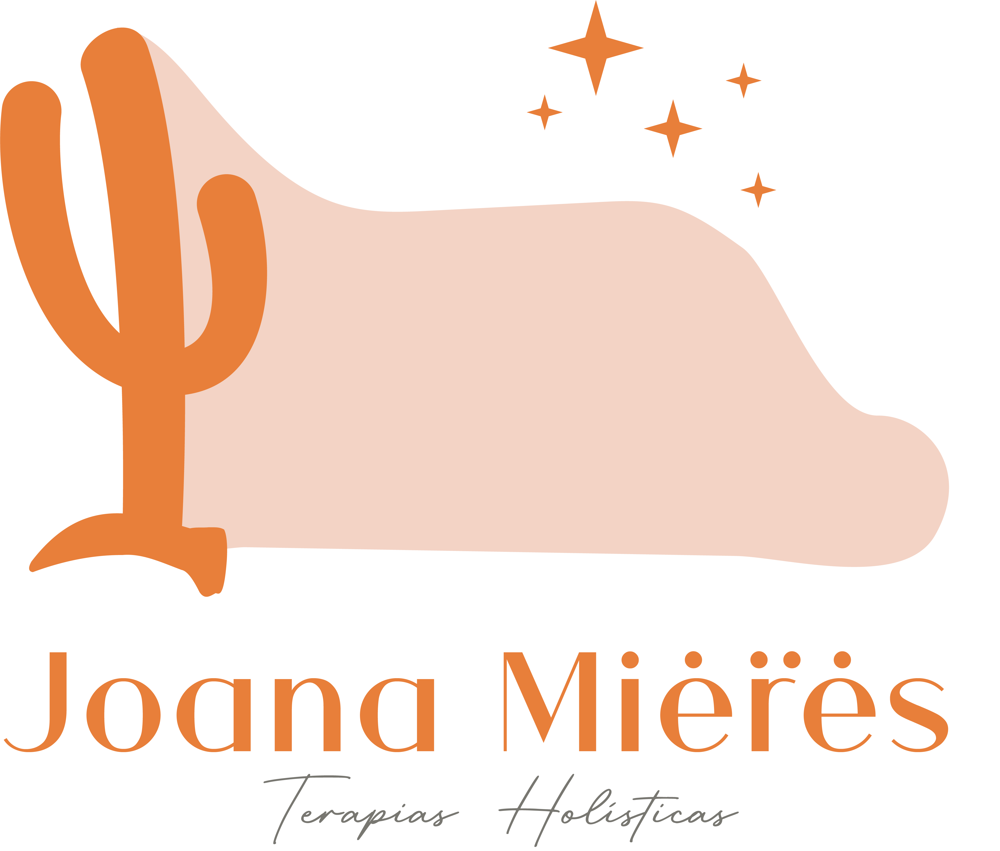
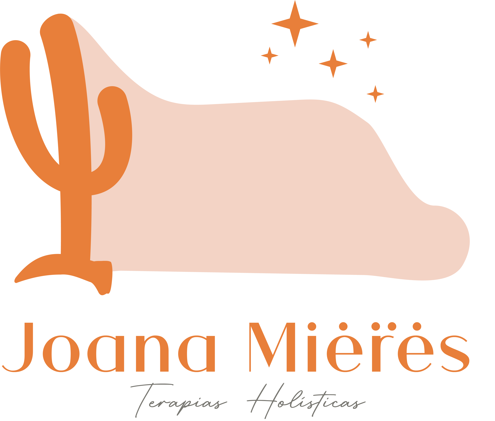
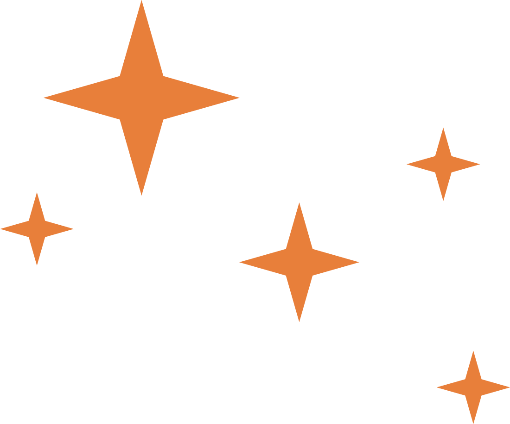

Joana MieresTerapeuta

Joana Mieres
Sobre mim
.jpg) 

Terapeuta,
escritora, professora e empresária.
A menina nascida em 23/01/1983, de mente inquieta, comunicativa, e ao mesmo tempo introspectiva, tinha o sonho de ser escritora, professora e empresária. Foi persistente, resiliente e fez a vida que ela queria acontecer.
Em 2008, se formou em Letras Português / Inglês pela FURG e estudou Mestrado em História da Literatura, pesquisando a literatura nos jornais do século XIX e a vida e obra de uma escritora feminista da mesma época.
Hoje, pós-graduanda em Espiritualidade, Carreira e Sentido de Vida, pesquisa o mundo da mentalidade e do autoconhecimento para trazer mais ferramentas de cura para seu trabalho de Terapeuta Holística, Taróloga, Biblioterapeuta e Desprogramadora de Crenças.
Aliado ao seu trabalho de sessões e mentorias terapêuticas, traz a experiência de mais de 17 anos de liderança e gestão de pessoas e de empresária desde 2013.
São mais de 13 mil horas de aulas dadas, mais de 12 mil horas de treinamentos feitos e já era mentora antes mesmo desse termo virar moda. São também mais de 20 mil horas de atendimento pedagógico, coordenação de ensino, seleção de pessoas, entrevistas, contratações, atendimento ao cliente, negociações e vendas.
Joana Mieres é PAS (Pessoa Altamente Sensível) e uma aquariana que adora inovar, ouvir e contar histórias que curam. Através da Literatura Terapêutica, em seus Círculos de Empoderamento, ela cria espaços de fala para mulheres praticarem o autocuidado e a escuta das emoções. E o Tarô, uma de suas paixões, também conta histórias para quem tem ouvidos para ouvir e olhos para despertar.
Passou pelas perdas do pai em 2006 e da mãe em 2015, além de outras perdas que mudaram sua maneira de ver a vida. E só o fato de ser empresária também a fez amadurecer como pessoa e não só como profissional. Clarice Lispector a definiria assim: Sou como você me vê. Posso ser leve como uma brisa ou forte como uma ventania. Depende de quando e como você me vê passar.
Aquário e Capricórnio são seus signos solares. Touro é seu signo lunar. Seus ascendentes são em Aquário e Peixes, com influência de Áries. Representam sua busca intensa pelo sentido da vida e pela autenticidade. Suas 5 Forças Pessoais se entrelaçam com os 5 Pilares que ela vem construindo em sua vida e carreira:
A menina nascida em 23/01/1983, de mente inquieta, comunicativa, e ao mesmo tempo introspectiva, tinha o sonho de ser escritora, professora e empresária. Foi persistente, resiliente e fez a vida que ela queria acontecer.
Em 2008, se formou em Letras Português / Inglês pela FURG e estudou Mestrado em História da Literatura, pesquisando a literatura nos jornais do século XIX e a vida e obra de uma escritora feminista da mesma época.
Hoje, pós-graduanda em Espiritualidade, Carreira e Sentido de Vida, pesquisa o mundo da mentalidade e do autoconhecimento para trazer mais ferramentas de cura para seu trabalho de Terapeuta Holística, Taróloga, Biblioterapeuta e Desprogramadora de Crenças.
Aliado ao seu trabalho de sessões e mentorias terapêuticas, traz a experiência de mais de 17 anos de liderança e gestão de pessoas e de empresária desde 2013.
São mais de 13 mil horas de aulas dadas, mais de 12 mil horas de treinamentos feitos e já era mentora antes mesmo desse termo virar moda. São também mais de 20 mil horas de atendimento pedagógico, coordenação de ensino, seleção de pessoas, entrevistas, contratações, atendimento ao cliente, negociações e vendas.
Joana Mieres é PAS (Pessoa Altamente Sensível) e uma aquariana que adora inovar, ouvir e contar histórias que curam. Através da Literatura Terapêutica, em seus Círculos de Empoderamento, ela cria espaços de fala para mulheres praticarem o autocuidado e a escuta das emoções. E o Tarô, uma de suas paixões, também conta histórias para quem tem ouvidos para ouvir e olhos para despertar.
Passou pelas perdas do pai em 2006 e da mãe em 2015, além de outras perdas que mudaram sua maneira de ver a vida. E só o fato de ser empresária também a fez amadurecer como pessoa e não só como profissional. Clarice Lispector a definiria assim: Sou como você me vê. Posso ser leve como uma brisa ou forte como uma ventania. Depende de quando e como você me vê passar.
Aquário e Capricórnio são seus signos solares. Touro é seu signo lunar. Seus ascendentes são em Aquário e Peixes, com influência de Áries. Representam sua busca intensa pelo sentido da vida e pela autenticidade. Suas 5 Forças Pessoais se entrelaçam com os 5 Pilares que ela vem construindo em sua vida e carreira:

Forças Pessoais:
- Beleza e Excelência
- Espiritualidade
- Perspectiva
- Inteligência Social
- Criatividade
Seus Pilares:
- Poética
- Espiritualidade
- Autoconhecimento
- Mentalidade
- TransformAÇÃO
Joana Mieres acredita que todas podemos ter sucesso quando recebemos as ferramentas certas, motivação e conhecimento e ela está aqui para trazer valentia para tua vida. A cada dia, uma parte adormecida te pede para despertar. Acorde!